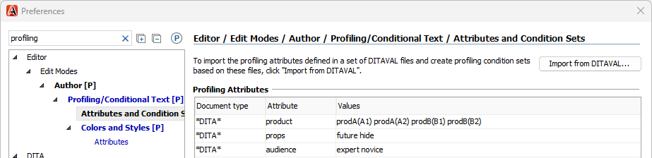
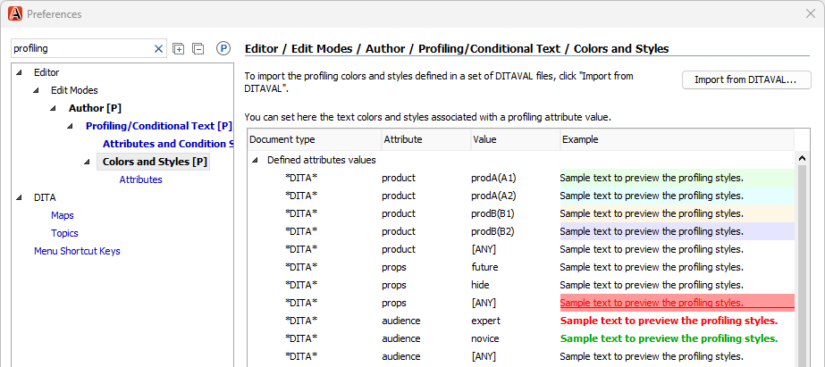
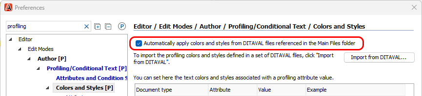
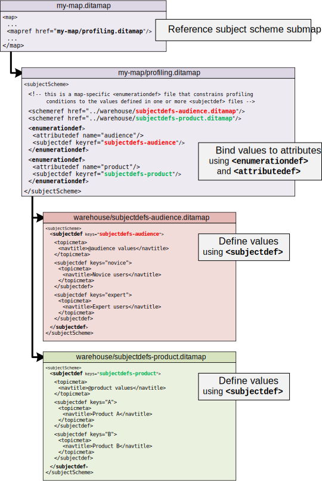
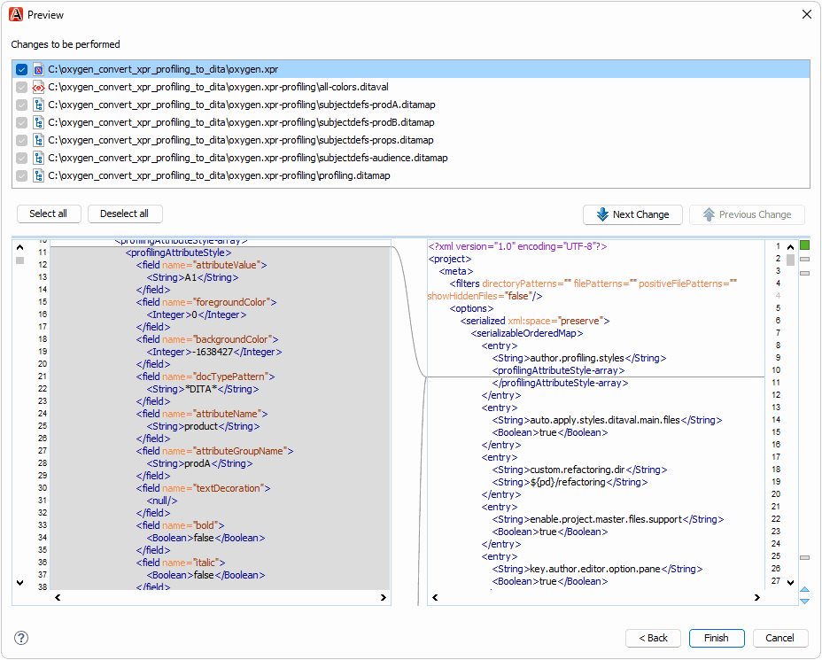

Converting .xpr Profiling Conditions to Standard DITA Files
Profiling Conditions in the Oxygen .xpr Project File
When we first started using Oxygen and DITA, we defined our profiling conditions in the Oxygen .xpr project file:
-
Attribute values were defined in :

Colors were defined in :

We organized our DITA content into three different Git repositories. The DITA content in each Git repository used different profiling conditions. But we wanted to share a single .xpr file across all three repositories, so we defined all profiling conditions in that file.
Storing profiling conditions in a shared .xpr file caused some issues:
-
Writers were shown profiling conditions from other repositories that were not relevant to them.
This was okay in the beginning because we did not have many profiling conditions. But over time, the number of profiling conditions increased as we increased content reuse and converted more content to DITA.
-
It was time-consuming to add or update profiling conditions.
Writers are not permitted to modify our .xpr file, so I needed to understand and implement each new condition. Then I had to roll out the updated .xpr file to all three Git repositories (and sometimes to multiple branches in a repository).
-
Color definitions could become desynchronized.
Colors were defined in two places—in the .xpr file for the Oxygen UI and in DITAVAL files for transformations—and I needed to remember to update the colors in both places.
Oxygen supports DITA subject scheme files for defining profiling condition attribute values in a DITA-standard way, so we started using them. This allowed writers to add or update attribute values, which was a step in the right direction. But I still needed to update and distribute the corresponding colors in the .xpr file.
When we decided to add a fourth Git repository that required many new profiling conditions, we decided we needed a better approach. And fortunately the Oxygen v26.0 release saved the day with a solution.
Profiling Conditions in Standard DITA Files
The Oxygen v26.0 release provides a new feature that allows profiling condition colors to be loaded dynamically from DITAVAL files:

In previous versions, Oxygen could statically import colors from DITAVAL files into the .xpr file, but that did not resolve the fundamental challenges with a shared .xpr files described above.
With this new feature, Oxygen loads the color definitions directly from the DITAVAL files in the Main Files list when you open a DITA map or topic.
Now we can define profiling conditions entirely with standard DITA files, with no product-specific information needed in the .xpr file:
-
Attribute values are defined by DITA subject scheme files
-
Attribute colors are defined by DITAVAL files, for both editing and publishing
Finally, profiling condition updates are completely self-service for writers! They can freely add or update profiling condition values or colors as they want.
What Are DITA Subject Scheme Files?
A DITA subject scheme file is a specialized type of DITA map file that can constrain attributes and elements to particular defined values. It is included as a submap in a DITA content map. In this case, we can use it to constrain profiling attributes.
Subject scheme maps accomplish this task in two steps:
-
A
<subjectdef>element defines a set of values for a subject.-
For example, a subject could be a product family, and its values are variants within that product family.
-
-
An
<enumerationdef>element binds the values for one or more subjects (products) to the attribute specified by<attributedef>.
In our environment, we keep a centralized set of value definition files in a "warehouse" folder:

DITA subject scheme structures might seem intimidating at first. However, they can be easier to understand when populated with attributes and values that are familiar to you.
Converting .xpr Profiling Conditions With Refactoring
To make it easier to move from .xpr-defined profiling conditions to standard DITA profiling conditions, I created a refactoring operation that processes an input .xpr file as follows:
-
Converts profiling condition value definitions to DITA subject scheme files
A profiling.ditamap file is created that can be referenced by DITA content maps.
-
Converts profiling condition color definitions to a single all_colors.ditaval file
This file can be added to the Main Files list defined in the Oxygen .xpr project file. Although the color definitions might change over time, the file location does not, and so no changes are needed to the .xpr file.
-
Removes the converted value and color definitions from the input .xpr file
You can use the following test case to experiment with this refactoring operation:
The oxygen.xpr file in the test case contains profiling conditions that you can convert to DITAVAL and DITA subject scheme files:

To try the refactoring operation,
-
(Optional) Create a backup copy of the .xpr file.
The refactoring operation removes converted profiling conditions from the input .xpr file, so you might want to save a copy of the original file.
-
Open the .xpr file in an Oxygen editing window.
Locate the .xpr file in the Project view, then right-click it and choose . When prompted for the format, accept the default of XML Document.
-
Run the refactoring operation on the file.
In the editing window, right-click and choose .
-
In the configuration dialog, specify how to perform the conversion:
-
For Attributes to convert, specify the space-separated list of profiling attributes to convert.
-
For When writing <subjectScheme> files, specify how to distribute the value definitions (
<subjectdef>) and attribute bindings (<enumerationdef>) across one or more subject scheme files.For example, if you are using profiling attribute groups (the testcase uses groups for the
@productattribute), having each group defined in its own<subjectdef>file can help different writers track their own changes over time in Git.
-
-
Click the Preview button to preview the operation, then complete the refactoring operation.
-
Add the oxygen.xpr-profiling/ folder to the Main Files list.
Right-click the folder in the Project view, then choose Add to Main Files.
-
Configure Oxygen to dynamically load colors from the newly created DITAVAL file.
In , enable the Automatically apply colors and styles... checkbox.
The newly created profiling.ditamap file defines all profiling condition values. If a particular DITA map needs only some conditions, you can create a map-specific copy of the profiling.ditamap file that binds only the values of interest. In our environment, we use the convention of mapdir/profiling.ditamap, keeping the same "profiling.ditamap" file name but placing it inside the relevant map content folder.
To create a map-specific copy of profiling.ditamap in the test case,
-
Perform the conversion as described above.
-
Copy the profiling.ditamap file from the oxygen.xpr-profiling/ folder to the my-map/ folder.
-
Open the newly copied my-map/profiling.ditamap file and fix any
<schemeref>references to *-subjectdefs.ditamap files.This step is only necessary if you configured the refactoring operation to create "two" or "many"
<subjectScheme>files. -
Add a map reference to the map-specific profiling file.
Open the my-map.ditamap file in the DITA Maps Manager, then add a map reference to the my-map/profiling.ditamap file.